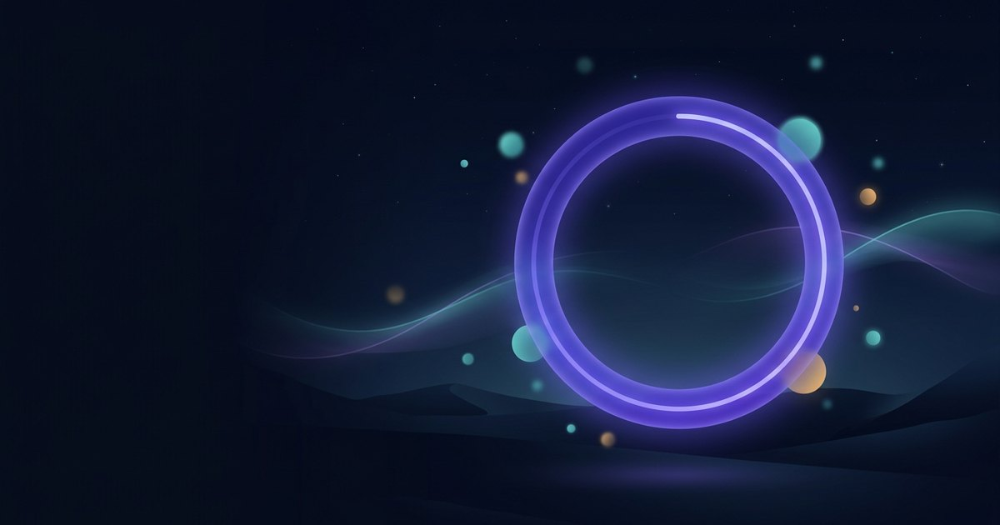

Deep work,
distilled.
FocusFlow pairs a throttle-proof Pomodoro timer with a task queue and streak analytics — everything you need to start in 5 seconds and stay in flow. Your data never leaves this device.
No account · No ads · No tracking · Installable on desktop & mobile

Everything you need. Nothing tracking you.
Built for students, makers and remote teams who want flow — not another dashboard demanding a login.
Throttle-proof timer
Timestamp-based engine stays accurate through background tabs, screen locks and laptop sleep — the #1 failure of other web timers.
Task-linked Pomodoros
Attach sessions to tasks with estimates. Watch tomatoes pile up on the work that actually matters.
Streaks & analytics
Daily totals, 14-day chart and streaks — the analytics others put behind a paywall, free forever.
100% offline
An installable PWA. Close the tab, kill the Wi-Fi, fly to the mountains — FocusFlow keeps ticking.
Calm ambient sound
Warm brown noise generated on-device, plus a gentle completion chime. No streaming, no subscription.
Local-first privacy
No servers, no analytics SDKs, no cookies. Export your data as JSON any time. GDPR by architecture.
From zero to flow in three beats
Open the app and press Space. That's the whole onboarding.
Start a 25-minute focus
One tap (or Space). The gradient ring drains as you work; your active task counts the tomatoes.
Break, the smart way
Short breaks keep rhythm; every 4th session earns a long break. Breaks can auto-start so you never "forget" to rest.
Review your momentum
Check today's minutes, your streak and the 14-day chart. Improvement you can see keeps you coming back.
Why people switch to FocusFlow
| FocusFlow | Typical apps | |
|---|---|---|
| Price for core features | Free | $5–12/mo |
| Account required | Never | Usually |
| Works offline | Full | Partial |
| Survives sleep/tab-throttle | Yes | Often drifts |
| Analytics & streaks | Free | Paywalled |
| Your data leaves device | Never | Always |
Your attention stays yours.
FocusFlow has no backend: every task, session and streak lives in your browser's local storage. No tracking pixels, no cookies, no fingerprinting — we literally cannot see your data. Export it, back it up, or erase it completely with one click.
Ready to reclaim your focus?
Free forever. Works offline. Starts in five seconds.
Launch FocusFlow